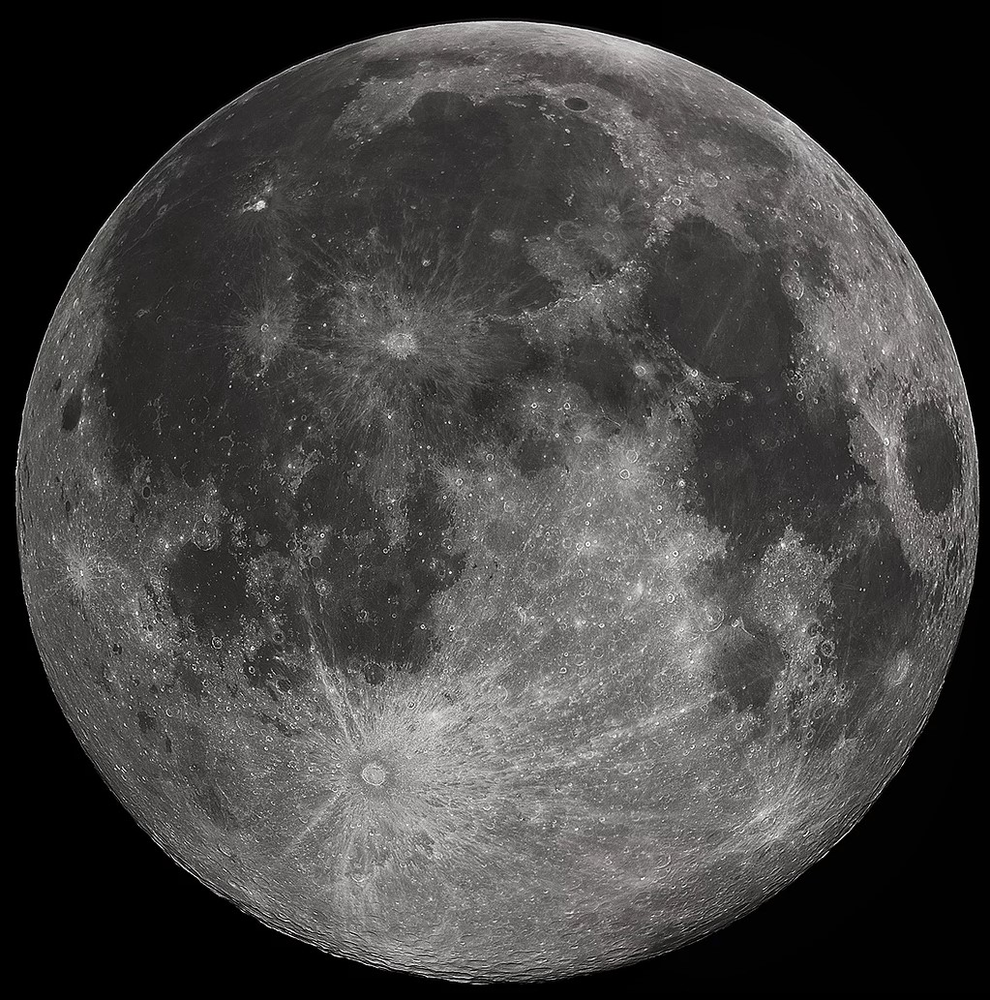

The Moon, Earth's only natural satellite, is a fascinating celestial body! It's about one-quarter the diameter of Earth and orbits our planet at an average distance of 384,400 kilometers.
With its phases and tides, the Moon has a profound influence on Earth. Its surface is marked by craters, mountains, and vast plains called maria. The Moon's lack of atmosphere means it has no weather, but its gravitational pull causes ocean tides on Earth.
The Moon's surface is covered with a layer of fine dust and rocky debris called regolith. It is rich in elements like oxygen, silicon, magnesium, iron, calcium, and aluminum.
Water molecules were detected in permanently shadowed craters near the Moon's poles. NASA's Lunar Reconnaissance Orbiter (LRO) and India’s Chandrayaan-1 confirmed the presence of water ice in 2009.
To know more about the Moon, click the link below:
Learn More About the Moon